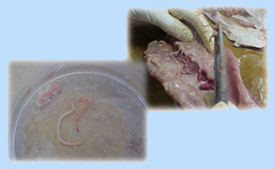

|
“Síndrome originado por la ingestión de alimentos y/o agua, que contengan agentes etiológicos en cantidades tales que afecten la salud del consumidor a nivel individual o grupos de población.”
“LAS ALERGIAS POR HIPERSENSIBILIDAD INDIVIDUAL A CIERTOS ALIMENTOS NO SE CONSIDERAN ETA”
Fuente: http://www.msds.gov.ve/Boletines/ETADEF.pdf
La Organización Mundial de la Salud (OMS), ha definido a las ETA como “una enfermedad de carácter infeccioso o tóxico que es causada, o que se cree que es causada, por el consumo de alimentos o de agua contaminada”.
El Comité de Expertos de la OMS analizó que la mayoría de las enfermedades transmitidas por alimentos son de origen microbiano y que probablemente éste sea el problema más extendido en el mundo contemporáneo, así como, una causa importante de la reducida productividad económica.
Según los investigadores de la OMS, las ETA constituyen una patología con una proporción de personas en condiciones de contraer la enfermedad que alcanza a todos los estratos poblacionales, es decir que todos somos susceptibles a las enfermedades causadas por alimentos contaminados.
Fuente: http://www.panalimentos.org/comunidad/ educacion1.asp?cd=152&id=67
Infección Alimentaria: Resultan de la ingestión de alimentos que contienen la presencia de bacterias u otros microorganismos vivos (como virus, parásitos, hongos) los cuales infectan el cuerpo después del consumo.
Intoxicación Alimentaria: Refiere a la ingestión de toxinas que se encuentran en:
- Tejidos de plantas o animales,
- Productos metabólicos de microorganismos en los alimentos,
- Sustancias químicas que se incorporan de modo accidental, incidental o intencional en los alimentos.
Ocurren cuando las toxinas o venenos (de bacterias o mohos) están presentes en el alimento, incluyendo exotoxinas producidas por el metabolismo de las bacterias. Estas toxinas pueden estar presentes incluso cuando el microorganismo que las produjo ha sido eliminado o esté incapacitado para provocar infección.
Fuente: http://www.panalimentos.org/comunidad/ educacion1.asp?cd=298&id=67
La mayoría de los casos de ETA, son producidos por una gran variedad de bacterias patógenas, virus ó parásitos que contaminan los alimentos, más que por toxinas naturales o químicas.
Estas enfermedades se manifiestan con síntomas diferentes, de modo que, no se pueden describir bajo una única forma o síndrome. Sin embargo, dado que los microorganismos o toxinas ingresan al cuerpo a través del tracto gastrointestinal y frecuentemente causan los primeros síntomas allí, las náuseas, vómitos, calambres abdominales y diarrea, resultan ser los síntomas más comunes de muchas enfermedades de transmisión alimentaria. Las manifestaciones no sólo se limitan a estos signos gastrointestinales, ya que existen otros padecimientos que cursan con alteraciones neurológicas, cutáneas o sobre la función de órganos vitales.
Generalmente, el cuerpo es capaz de recuperarse por completo luego de un período corto de malestar agudo. Sin embargo, las ETA pueden resultar en problemas de salud permanentes e incluso la muerte, especialmente en personas consideradas con alto riesgo.
|
|

Parásitos Anisakidos en Pescado Fresco
Fuente: INH “RR”
Todos somos susceptibles a contraer una enfermedad transmitida por los alimentos. Algunos grupos demográficos están a mayor riesgo que otros como son:
- Los lactantes y niños pequeños debido a que su sistema inmunológico no está completamente desarrollado como el de los adultos.
- Los ancianos, debido a que la efectividad de su sistema inmunológico ha disminuido con la edad.
- Individuos enfermos cuyos sistemas inmunológicos no están funcionando apropiadamente por causa de padecimientos como el cáncer, sida u otras enfermedades.
- Mujeres embarazadas y sus fetos.
Se pueden evidenciar varios síntomas como: malestar estomacal, diarrea, náusea, vómito, fiebre, escalofríos, dolores abdominales, dolor de cabeza, mareos u otros; si esto ocurre a las pocas horas de haber ingerido alimentos, y además le ocurre a otra persona (que haya ingerido los mismos alimentos), podemos entonces sospechar que estamos en presencia de una ETA. Lo más recomendable es buscar asistencia en un Centro de Salud (Ambulatorio, Hospital o Servicio de Salud Privado).
Una vez que se recibe asistencia médica (nivel de asistencia primaria), el médico debe determinar si está en presencia de una ETA, y conjuntamente con el epidemiólogo debe proceder a realizar la denuncia en el Distrito Sanitario al cual pertenece el Centro de Salud; para así iniciar la investigación epidemiológica.
El nivel de atención primaria (Centro de Salud) debe disponer de modelos de encuesta epidemiológica y materiales para toma de muestras; a fin de que el personal, tan pronto detecte los primeros casos, pueda recolectar la información preliminar y proceder a la toma de muestras clinicas hasta que llegue el personal del Distrito Sanitario correspondiente o equipo de investigación a completar el estudio.
Ésta investigación incluye una revisión de la información de casos de ETA que hayan llegado al servicio de salud, para detectar las similitudes en relación a la fecha de inicio de los síntomas, número de enfermos, síntomas predominantes, alimentos sospechosos, lugar y hora cuando se consumió el alimento sospechoso (aquellos consumidos dentro de las 72 horas anteriores al inicio de los síntomas) y cualquier otra información de interés epidemiológico.
El personal del Distrito Sanitario correspondiente o equipo de investigación se desplazará a la mayor brevedad posible hacia los sitios donde se encuentran los comensales expuestos, (enfermos o no) y al local donde se preparó o consumió la comida sospechosa. La rapidez tiene como objetivo efectuar oportunamente las encuestas, la recolección de las muestras de alimentos sospechosos, muestras ambientales y muestras biológicas de las personas afectadas, antes que los pacientes reciban antibióticos y los alimentos sean eliminados.
La notificación de brotes de ETA debe hacerse al Distrito Sanitario Correspondiente.
|